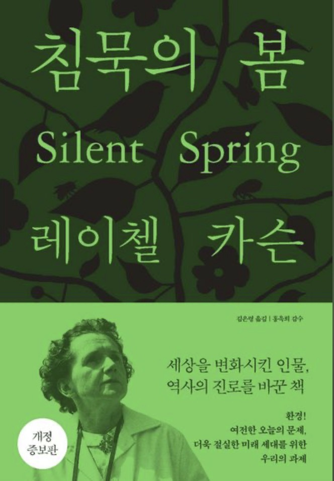
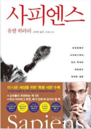
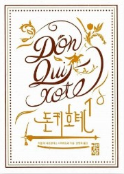

벽돌책을 하루 한 챕터씩, 끝까지.
두꺼워서 혼자서는 끝까지 못 가는 책들이 있습니다. 그런 책만 골라 여럿이 함께 걷습니다. 하루에 한 챕터씩 읽고, 그날의 질문 몇 개에 몇 줄 적고, 한 주에 한 번 모여 나눕니다. 1기부터 지금까지의 자료를 여기에 모아 둡니다. 모임에 없으셨던 분도 그대로 펴서 쓰실 수 있습니다.
우티스의 북살롱 소개
우티스의 북살롱은 2022년부터 지금까지 이어 오고 있는 독서모임입니다. 지금까지 46권을 함께 읽었습니다. 책을 읽고 글을 쓰고 싶은 분이라면 누구나 오실 수 있습니다.
이렇게 함께합니다
이런 분을 모십니다
모임을 꾸리는 사람
이서윤 · 한국강사신문에 칼럼 「이서윤의 문장연구소」를 연재하고 있습니다.
저서 『아무튼 지치지 않도록』 · 공저 『그림책을 활용한 감정코칭』 『생각을 여는 창』 『삶이 레몬을 준다면 레모네이드를 만들어라』
벽돌책 완독 챌린지

레이첼 카슨 · 전 17장
1962년, 살충제가 흙과 물과 새와 사람의 몸에 무엇을 남기는지 한 장씩 따라갑니다. 하루 한 장, 월~금, 네 주. 2026. 11. 2 ~ 11. 24 · 참가비 없음.

유발 하라리 · 김영사 · 598쪽 · 전 20장
인류 30만 년을 스무 밤에. 하루 한 챕터, 월~금, 다섯 주. 2026. 9. 21 ~ 10. 21 · 정원 여덟 분 · 참가비 없음.

세르반테스 · 열린책들 · 전 2권 126장 · 2026. 1. 5 ~ 3. 19
기사도의 시대가 끝난 자리에서, 끝까지 믿기를 택한 사람의 이야기. 하루 두 장, 열 주.
그 밖의 모임
투르게네프 · 25편 · 작품별 줄거리와 인물, 질문 셋
우티스의 북살롱 · 하루 한 챕터, 끝까지
자료는 모임에 오시지 않은 분도 자유롭게 쓰실 수 있습니다.